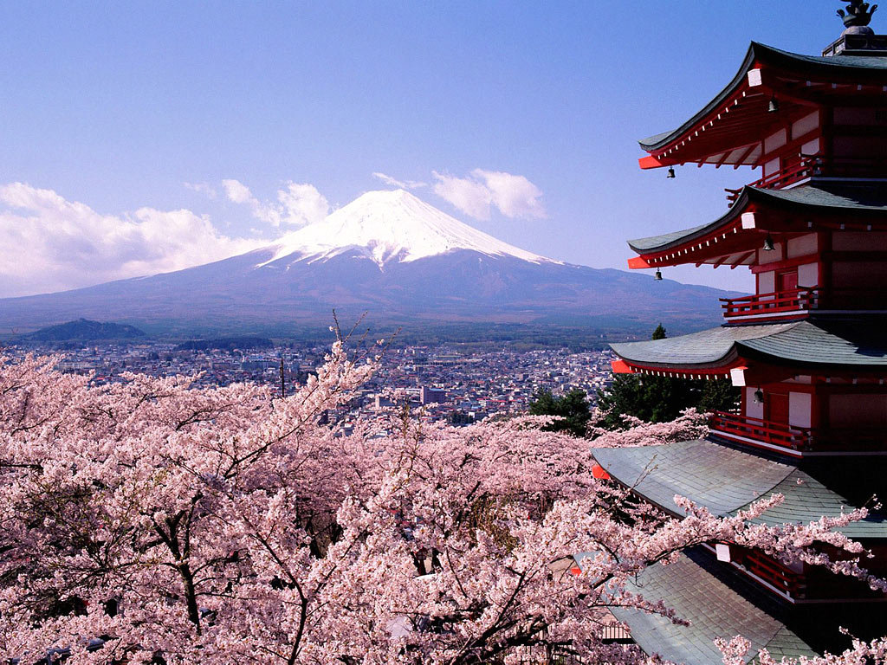
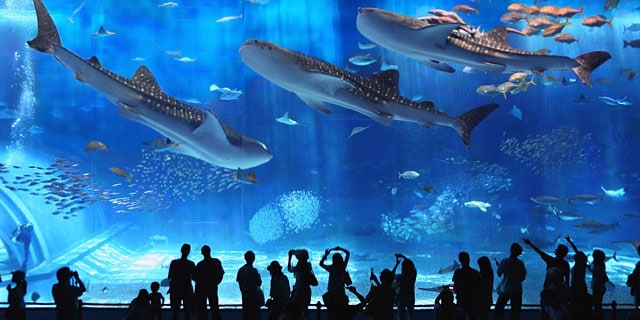

Tempat Wisata yang Wajib Dikunjungi
1. Tokyo Disneyland

Tak berbeda dengan konsep Disneyland di beberapa negara lain, Tokyo Disneyland juga menyajikan sebuah taman rekreasi berkonsep Disney.
Tempa wisata yang satu ini merupakan Disneyland pertama yang dibangun di luar Amerika Serikat dan resmi dibuka pada tahun 1983. Tokyo Disneyland dibagi menjadi tujuh area utama yaitu, World Bazaar, Tomorrowland, Toontown, Adventureland, Westernland, Critter Country, dan Fantasyland
Alamat : 1-1 Maihama, Urayasu, Chiba Prefecture 279-0031, Japan.
2. Gunung Fuji
Salah satu tempat wisata di Jepang terbaik adalah Gunung Fuji yang tentunya sudah tak asing lagi bagi kita. Gunung setinggi 3.776 meter ini merupakan gunung tertinggi dan populer di Jepang. Gunung ini terletak di antara Yamanashi dan Shizuoka dan jika sedang cerah, kita bisa melihatnya dari Tokyo dan Yokohama. Cara lainnya untuk menikmati keindahan Gunung Fuji adalah dengan naik kereta antara Tokyo dan Osaka.
3. Okinawa Churaumi Aquarium
Okinawa Churaumi Aquarium disebut-sebut sebagai akuarium terbaik di Jepang. Daya tarik utama disini adalah Kuroshio Tank, sebuah akuarium raksasa dimana pengunjung bisa menyaksikan kehidupan laut melalui terowongan yang tersedia.
Selain akuarium raksasa, disini juga terdapat kolam outdoor yang kerap menghadirkan pertunjukan binatang laur seperti lumba-lumba dan singa laut.
Alamat : 424 Ishikawa Motobu, Kunigami District, Okinawa Prefecture 905-0206, Japan